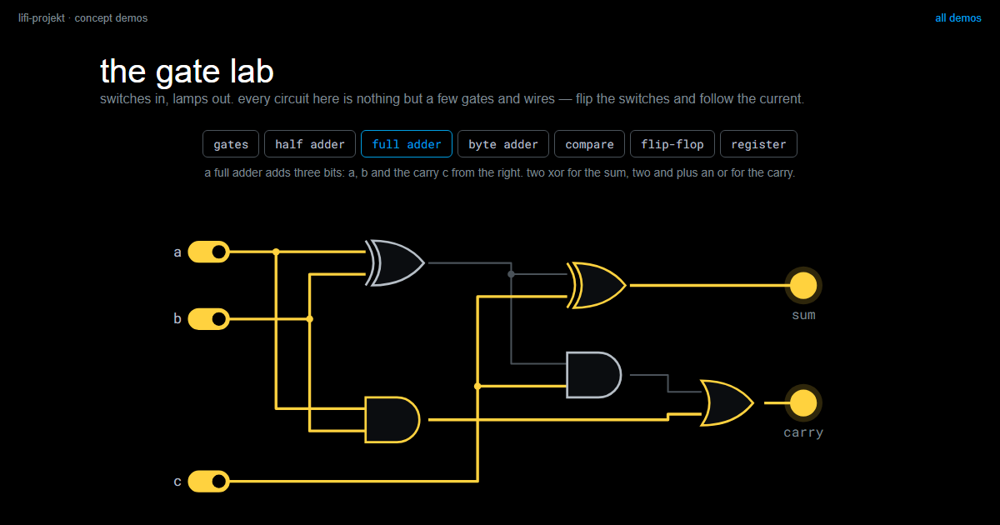
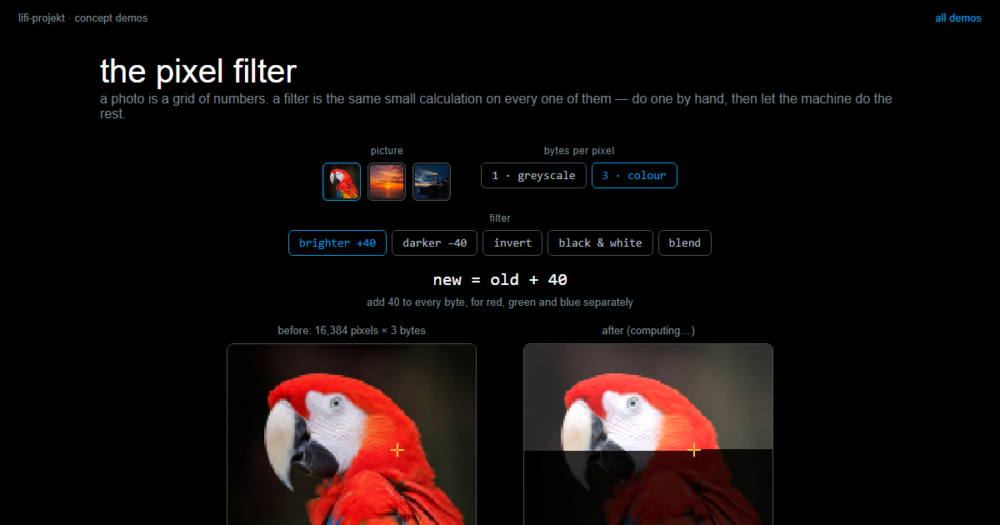

Logic and Arithmetic
Summary
A computer does not only keep bits and pass them on. It combines them and changes them, following fixed rules. A handful of tiny building blocks is enough to build everything from that: adding, comparing, checking for errors, encrypting, brightening a photo, and so much more.
In this chapter, we address the following questions:
- What does a computer do with bits, apart from storing and sending them?
- What are the building blocks of processing, and how few do you need?
- How does a circuit made of gates remember a bit?
- How does a machine add two numbers?
- What happens, pixel by pixel, when a photo gets brighter?
- Why does one of these building blocks give you both error detection and encryption?
You need this concept for Challenge 4. You met it for the first time in Challenge 2, when your program decided which colour it had seen.
Explanation
Start with a relay. A relay is a switch that is flipped by a current: when current flows through its coil, the coil pulls a contact, and a second circuit closes. That is all it can do. Put two relays in a row and the second circuit only conducts when both are pulled. Put them side by side and it conducts when either one is pulled. In 1941 Konrad Zuse’s Z3 computed with about two thousand of these, clattering away, and it could add, multiply and take square roots. The chip in your laptop does nothing different. Its switches are a few billion, and they are silent. This page walks the whole way from the switch to the tap on your screen that makes a photo brighter. What sits behind that tap is surprisingly dumb: the same addition, tens of thousands of times in a row.
Three things a computer does with bits
So far, everything in this course was about how information is represented and moved. Storing and sending leave the bits as they are. The file on your disk is the same file tomorrow, and across the light link the bits arrive as they left, or something went wrong. A computer that only did that would be a very fast messenger. The third verb is the one that matters: from the bits you have, new bits appear that were nowhere before, made by fixed rules. A checksum, a compressed picture, the decision “that was red” made from four sensor values: all of that is processing.
The whole toolbox
The building blocks of processing are called gates, and there are only a few. Each one is a switch with one fixed rule: two bits in, one bit out. AND gives 1 when both inputs are 1. OR gives 1 when at least one is. XOR, the exclusive or, gives 1 when exactly one input is 1, so it asks “are the two different?”. And one gate has a single input: NOT flips a bit. The complete list of cases for a gate is its truth table.
{kind=link}
Why so few? You could even make do with one. NAND is AND followed by NOT, and from NAND alone all the others appear: NOT, by feeding the same bit into both inputs; AND, by flipping a NAND once more; OR, by flipping both inputs first. NAND is also what a pair of transistors does on its own, so the chip in your laptop is, in practice, made of NAND gates, and the four from the toolbox are built out of them. NOR, which is OR followed by NOT, can do the same, and we need it in a moment.
You know the shape of a gate from Problem solving with computers: input, fixed rule, output. It is the IPO model at its smallest. And here is a sentence worth keeping: no gate understands anything. It does not know whether it is processing a number, a letter or a pixel. Meaning exists only for us, exactly as with the type field in Challenge 4.
Storing: a bit that remembers
Storing comes out of the same gates. Take two NOR gates and wire them into each other, so that the output of each one runs into an input of the other. Two lines come in on the left, set and reset. One line comes out on the right, q. This circuit is called a flip-flop. Put set to 1 for a moment, and q becomes 1. Now take set away again. q stays 1, because the two gates hold each other in place through the crossed wires: the circuit remembers the short pulse. Only reset = 1 tips it back, and then q stays 0. Set, hold, clear. A memory cell needs nothing more.
{kind=link}
Eight flip-flops side by side make a register, one byte. Millions of them, each row with an address, make the working memory, the RAM: address lines pick a row, data lines read it or write it. As long as current flows, the feedback keeps every bit alive. Switch the power off, and the loops collapse. That is why RAM forgets when you shut down, and why a hard disk stores things differently, magnetically. Storing and processing are the same switches, only wired differently.
The number in “32-bit” and “64-bit” comes from here, by the way. It is, above all, the number of address lines, so the number of rows the memory can have. Every extra line doubles the number of possible addresses. With 32 lines there are a little over four billion, 4 GB, and a fifth gigabyte simply has no address. That was the wall that 32-bit Windows ran into. With 64 lines there are 18 quintillion, more than all the RAM ever built.
How a machine adds
The addition table for two bits has four rows: 0 + 0 = 0, 0 + 1 = 1, 1 + 0 = 1, and 1 + 1 = 10, which is “sum 0, carry 1”. So a result has two digits, and each digit comes from one gate. Look at the sum column: 0, 1, 1, 0. It is 1 when the two bits are different. That is XOR. Look at the carry column: 0, 0, 0, 1. It is 1 only when both bits are 1. That is AND. Two gates, and the machine adds two bits. The circuit is called a half adder, “half” because it cannot yet accept a carry coming in from the right.
{kind=link}
A full adder takes the carry from the right as a third input and needs a few gates more, about five. Put eight full adders in a row and they add two bytes, exactly the way you add on paper: digit by digit, from right to left, carrying over. The figure shows 178 + 40. Keep that sum in mind, it comes back further down.
{kind=link}
The rest of arithmetic is built from the adder. Subtracting is adding the negative, and you get the negative of a binary number by flipping every bit and adding one. Multiplying is repeated adding, and times two is a shift by one position to the left, the way times ten appends a zero in decimal. Comparing is subtracting and looking at the sign. Everything ends up at the adder, and the adder ends up at two gates. Charles Petzold puts it in one sentence in his book “Code”: when you come right down to it, addition is just about the only thing that computers do.
In the demonstrator the gate lab you can switch every one of these circuits yourself: a single gate with its truth table, the half adder and the full adder, the byte adder made of eight blocks, the comparator, and the flip-flop that remembers a bit.
the gate labswitches in, lamps out: flip the inputs of a single gate, watch a half adder carry, chain eight full adders into a byte adder, and make two gates remember a bit.LiFi Project · concept demos
A photo, pixel by pixel
You know this from the Photo Digitiser: a greyscale picture is a grid of numbers, one byte per pixel, 0 black, 255 white. A picture of 128 by 128 pixels is 16,384 bytes, and the computer sees nothing but those bytes. “Brighter” then means: add 40 to every byte. To the first pixel, to the second, to all 16,384. No step knows anything about the picture. It is the same addition, very often.
{kind=link}
A real mistake is waiting here, one that every beginner makes once. 230 + 40 = 270, and that does not fit into eight bits. An adder that throws away the ninth carry leaves 14, almost black. A bright sky gets black speckles. This is called overflow, and the repair is a comparison (is the result greater than 255?) and a decision (then make it 255), which is called clamping. The adder itself has no idea what 255 means. You have to tell it.
Other filters come out of the same box. Darker: subtract. Negative: 255 minus the value, and that is NOT on every bit, because 255 in binary is 1111 1111. Black and white: compare with a threshold, the same decision you made in Challenge 1 with your colours. Blending two photos: add and halve, and halving is a shift by one position to the right. Every filter in your photo app is of this kind, only with more arithmetic. In the demonstrator the pixel filter you can follow it pixel by pixel and watch the counter run.
the pixel filtermake a photo brighter one addition at a time: step through a single pixel with its bits and carries, then let the machine do the other sixteen thousand in a blink, and see what happens at 255.LiFi Project · concept demos
One gate, two jobs
XOR across all eight bits of a byte, one gate after the other, says one thing at the end: an even or an odd number of ones. The byte 1011 0010 has four ones, so the result is 0. The sender attaches that one bit as a check bit. If a single bit flips on the way, the number of ones is odd, and the check bit no longer matches. More about that under Errors and redundancy.
{kind=link}
The same gate has a second job. XOR with a key flips exactly the bits where the key has a 1, and the result looks like noise. XOR once more with the same key flips them back, and the message is there again. Encrypting and decrypting are the same operation with the same key. A key of all zeros flips nothing, so then you are sending plain text and do not notice. More about that under Encryption.
{kind=link}
What makes a computer powerful is not the cleverness of its parts, but their number and their speed: a few gates, a few billion times per second. Once you have seen this, you will never again be surprised that a computer “understands” nothing and can still do everything you write down for it, step by step.
Slides
The slides for this concept, right here. Page through them with the buttons in the top right corner, or click into the slides and use the arrow keys. The other buttons give you full screen, the slides in a new tab, and the deck as a PDF.
Practice questions
Try questions in the exam format here, with the answer and its reasoning shown right away.
Further reading
- Charles Petzold: Code. The Hidden Language of Computer Hardware and Software. 2nd edition, Microsoft Press 2022. Builds gates from relays, an adder from gates, and a whole computer from there, step by step and without assuming anything. The chapters on relays, gates and addition are the long version of this page.